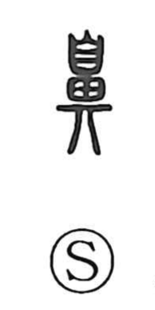

鼻

Uncategorized
Kun: hana | On: bi
nose
Explanation
鼻 is a picto-phonetic character. The upper part 自 sketches the front view of the nose, while 畀 serves as the phonetic element, evoking the hiss or breath sounded through the nose and guiding the on reading bi. From this sense of the nose as foremost, the term 鼻祖 came to mean the first ancestor or originator. Echoing the same imagery, popular belief once held that a child emerges nose-first at birth, and in southern China there was even a custom called 鼻飲, “nose drinking,” of taking in water through the nose.